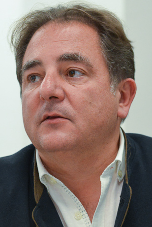

Robert Makłowicz
| Robert Makłowicz | |
|

Robert Makłowicz (2014) |
|
| Data i miejsce
urodzenia |
12 sierpnia 1963
Kraków |
|---|---|
| Zawód, zajęcie |
dziennikarz,
pisarz,
publicysta, krytyk kulinarny |
| Miejsce zamieszkania | Kraków Pelijesac |
| Alma Mater | Uniwersytet Jagieloński |
| Wyznanie | Katolik obrządku ormiańskiego |
| Rodzicie | Włodzimierz, Beata z domu Preiss |
| Małżeństwo | Agnieszka z d. Pogoda |
| Dzieci | Mikołaj, Ferdynand |
Robert Witold Makłowicz (ur. 12 sierpnia 1963 w Krakowie ) – polski krytyk kulinarny, dziennikarz, pisarz, publicysta, podróżnik i youtuber.
Życiorys [ edytuj | edytuj kod ]
Jest synem marynarza Włodzimierza Makłowicza i Beaty z domu Preiss. Ma młodszą siostrę Dominikę. Pochodzi z rodziny o korzeniach polskich, ukraińskich, ormiańskich, węgierskich i austriackich[1].
Jest absolwentem V Liceum Ogólnokształcącego im. Augusta Witkowskiego w Krakowie. W latach 1982–1989 studiował prawo, a następnie historię na Uniwersytecie Jagiellońskim.
Na przełomie 1989 i 1990 mieszkał w Wielkiej Brytanii, gdzie przez kilka miesięcy pracował jako robotnik w Kingston upon Thames[2]. Podczas pobytu na emigracji poznawał różne kuchnie świata, co po powrocie do Polski w
1990 skłoniło go do tego, by zostać krytykiem kulinarnym[2].
W 1993 został publicystą „Gazety Wyborczej”, dla której przez kolejne lata pisał felietony. W 1998 został gospodarzem niedzielnego cyklu reportaży Podróże kulinarne Roberta Makłowicza emitowanych na antenach Telewizji
Polskiej[3][4]. W latach 2002–2005 współpracował z tygodnikiem „Wprost”, po czym nawiązał współpracę z czasopismem „Newsweek Polska”, ponadto pisał dla „Przekroju”. Swoje felietony i książki pisał zazwyczaj wspólnie z Piotrem Bikontem.
W styczniu 2008 zakończył realizację Podróży kulinarnych... dla TVP. W miejsce tego cyklu nagrywał program Makłowicz w podróży, który w marcu 2008 pojawił się na antenie TVP2. Ponadto był przewodnikiem po świecie kulinarnym w pierwszych dwóch edycjach programu Bake Off – Ale ciacho![5]. 16 marca 2017 TVP zerwała współpracę z Makłowiczem[6].
Pod koniec lipca 2017 potwierdził, że będzie prowadzić program Makłowicz w drodze emitowany na kanale Food Network[7], którego premiera odbyła się 11 listopada 2017[8][9], wówczas wyemitowane zostały trzy odcinki
programu (jeden po drugim).
Jego wspomnienie o Marku Eminowiczu znalazło się w wydanej w 2009 książce, Lubię swoje wady. Marek Eminowicz w opowieściach na siedemdziesięciopięciolecie[10]. 20 października 2010 wydał książkę pt. Cafe Museum, za którą otrzymał Nagrodę Literacką Srebrny Kałamarz im. Hermenegildy Kociubińskiej[11]
W marcu 2020 uruchomił autorski kanał w serwisie YouTube, na którym publikowane są filmy o tematyce kulinarnej i historycznej[12][13]. Od października tego samego roku prowadzi w internetowej rozgłośni newonce.radio swoją
autorską audycję muzyczną Od Punk Rocka do Bartóka[14][15].
W swoich podróżach kulinarnych – Robert Maklowicz w podróży dociera do miejsc egzotycznych – od polskiego Orientu[3] – dookoła świata[4].